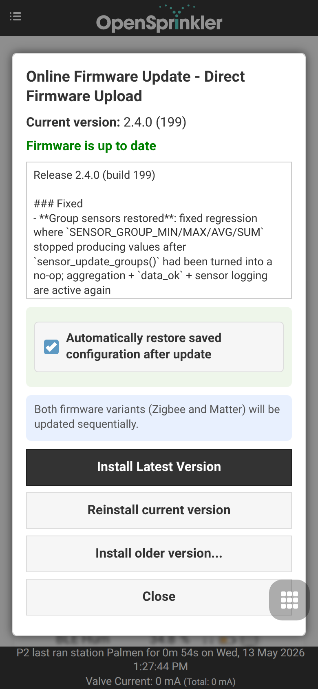

Extensão OpenSprinklerPro
O OpenSprinklerPro é de um conjunto estendido de funções do OpenSprinkler para instalações que necessitam de integrações modernas de rádio, sensores enriquecidos, atualizações online, acesso a IA/MCP e monitoramento avançado. Ele se baseia nas funções de irrigação existentes: zonas, programas, ajuste de clima, logs, acesso remoto e interface gráfica web/app.
A linha de firmware OpenSprinklerShop (incluindo o OpenSprinklerPro) usa sua própria versão independente. A versão de firmware atual é 2.4.0(208).
Esta página é autônoma, mas faz referências a manuais mais detalhados se necessário.
Visão Geral
O OpenSprinklerPro adiciona estas extensões:
- Atualizações Online OTA com verificação de manifestos, status de atualização e endpoints de backups.
- Funções de rádio ESP32-C5: Modo Gateway/Cliente Zigbee e chaveamento de rádio IEEE 802.15.4.
- Sensores BLE para builds ESP32 suportados e sistemas OSPi com Bluetooth.
- Sensores em nuvem FYTA de temperatura e umidade.
- Matter e ESP RainMaker para integrações de casa inteligente no ESP32.
- Acesso MCP para assistentes de IA diretamente na firmware ou no servidor web Node.js externo.
- Eventos de notificação para MQTT, e-mail, IFTTT e relatórios de monitoramento.
Disponibilidade da plataforma
| Recurso | ESP32-C5 Zigbee | ESP32-C5 Matter | ESP32 / non-C5 | ESP8266 | OSPi |
|---|---|---|---|---|---|
| Irrigação básica, programas, UI web, logs | ✅ | ✅ | ✅ | ✅ | ✅ |
| Online OTA via UI web | ✅ | ✅ | ✅ | ✅ | ❌ |
| Atualizações via terminal/Git | ❌ | ❌ | ❌ | ❌ | ✅ |
| Certificados HTTPS / ACME | ✅ | ✅ | dependente de ESP32 | ❌ | ❌ |
| Zigbee / IEEE 802.15.4 | ✅ | ❌ | ❌ | ❌ | ❌ |
| Sensores BLE | ✅ | ✅ | dependente de flag de compilação | ❌ | ✅ via Linux |
| Integração Matter | ❌ | ✅ | dependente de rádio | ❌ | ❌ |
| ESP RainMaker | ✅ | ✅ | dependente de ESP32 | ❌ | ❌ |
| Sensores FYTA | ✅ HTTPS | ✅ HTTPS | ✅ HTTPS | ✅ apenas HTTP | ✅ HTTPS |
MCP integrado /mcp |
✅ ESP32 + USE_OTF |
✅ ESP32 + USE_OTF |
✅ ESP32 + USE_OTF |
❌ | ❌ |
| Servidor MCP Node.js externo | ✅ | ✅ | ✅ | ✅ | ✅ |
Notas:
- As variantes ESP32-C5 Zigbee e Matter são escolhas de firmware separadas. Zigbee e Matter não podem estar ativos ao mesmo tempo no mesmo rádio do ESP32-C5.
- Endpoints Zigbee exigem ESP32-C5 e
OS_ENABLE_ZIGBEE. - Endpoints BLE exigem ESP32 e
OS_ENABLE_BLE; o ESP8266 não oferece suporte a BLE. - O OSPi possui os endpoints REST comuns, sensores, FYTA e monitor comuns, mas não os endpoints de hardware do rádio do ESP32.
Veja também: Adendo de API e plataforma, CHANGELOG.
Nomes de funções de UI e capturas de tela móveis
As extensões do OpenSprinklerPro são operadas na interface web normal. Os endpoints REST destinam-se principalmente a automação, diagnósticos e integrações; o fluxo do usuário começa nestas telas da interface.
| Extensão | Função / Caminho na Tela | Screenshot |
|---|---|---|
| Online firmware update | Side menu → Online Update |  |
| ESP32-C5 radio mode / Matter selection | Side menu → Setup ESP32 Mode |  |
| Zigbee Gateway | Side menu → ZigBee Gateway |  |
| ESP RainMaker | Side menu → RainMaker |  |
| MQTT, email, IFTTT e notificações | Footer menu → Edit Options → Integrations |  |
| Configuração de sensores e monitores | Footer menu → Analog Sensor Configuration |  |